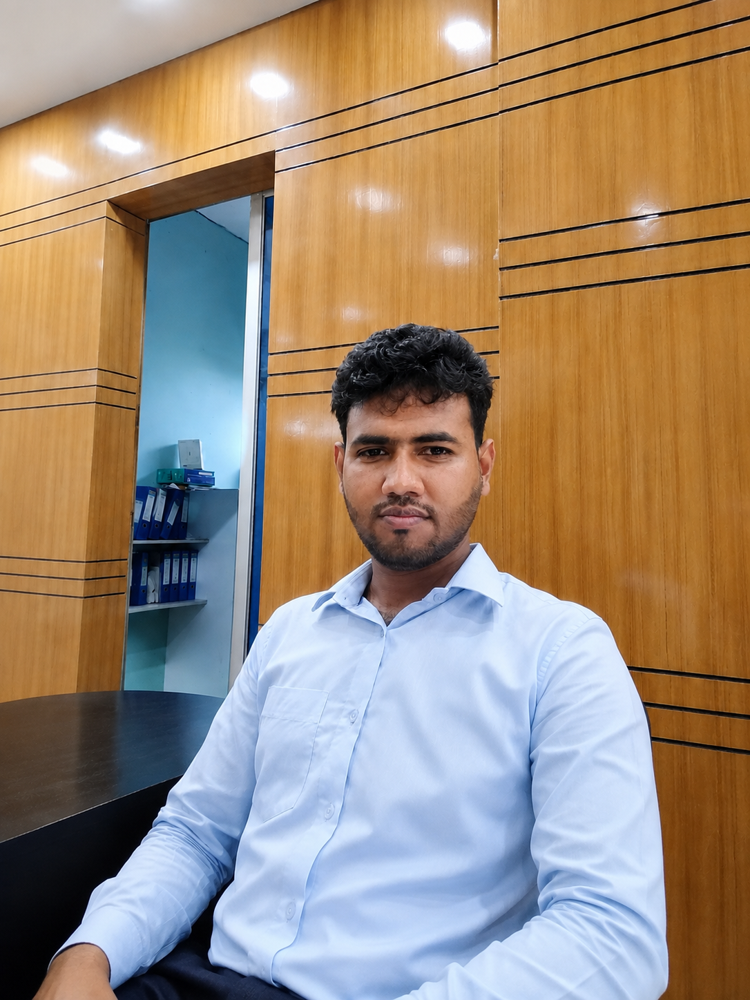

A motivated finance graduate with a BBA and MBA in Finance, interested in building a professional career through analytical thinking, business knowledge, continuous learning and practical problem solving.

A concise professional introduction.
I am a business graduate specializing in Finance, with an MBA background and internship exposure in banking. I enjoy working with information, organizing tasks, learning new tools and applying business concepts to practical situations.
I am looking for an opportunity where I can contribute with discipline, analytical ability and a strong learning mindset while developing long-term professional expertise.
Academic background in business and finance.
Major: Finance • IUBAT — International University of Business Agriculture and Technology
IUBAT — International University of Business Agriculture and Technology
Tools and capabilities I can bring to a professional environment.
Early professional exposure with a focus on learning and practical application.
Internship experience at Al-Arafah Islami Bank Limited.
BBA and MBA academic foundation with a specialization in Finance.
Practical familiarity with office productivity, social media and basic design tools.
Personal qualities that support professional growth.
Open to feedback, new tools and continuous improvement.
Focused on accuracy, task completion and maintaining professional standards.
Interested in professional opportunities, collaboration or networking.
Bangladesh